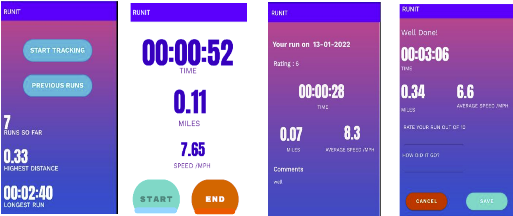

RUNIT App

The RUNIT app allows users to track and save their runs/journeys, along with notes and ratings. The app keeps a record of all their runs, enabling them to review their previous journeys and view achievements such as total runs, highest distance covered, and longest run. The information is presented in a user-friendly manner, facilitating data analysis and understanding. key features of the app include
- Track and save runs with notes and ratings
- View and analyze run data, including achievements
- Present data on widgets and other applications
- User-friendly app design for easy management
- Utilizes MVVM architecture for efficient app component implementation